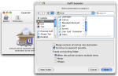
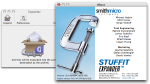

What's New in Stuffit Expander 12?
Stuffit Expander 12 includes the ability open just about any compressed or encoded file that you are likely to encounter - including archives created using DropStuff 12's new image recompression technology.
NEW FEATURES |
|
|  | StuffIt Expander 12 includes a new “One Time” options dialog that allows you to set many of the most common settings for StuffIt Expander so that they only apply to the current expansion task. To access one-time options, hold down the “Option” key while dragging and dropping an archive onto the Expander Dock icon. A new version checking mechanism notifies you when new versions of Stuffit Expander are available. Integration of Growl notifications. |
PERFORMANCE AND STABILITY ENHANCEMENTS |
|
|  | The ability to expand archives compressed with our latest recompressor technology, combined with a variety of performance and stability enhancements, make Stuffit Expander 12 the best version yet! |